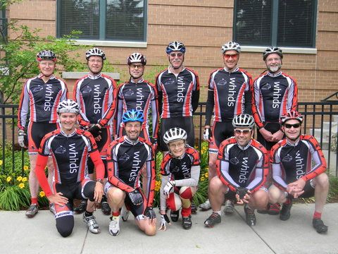
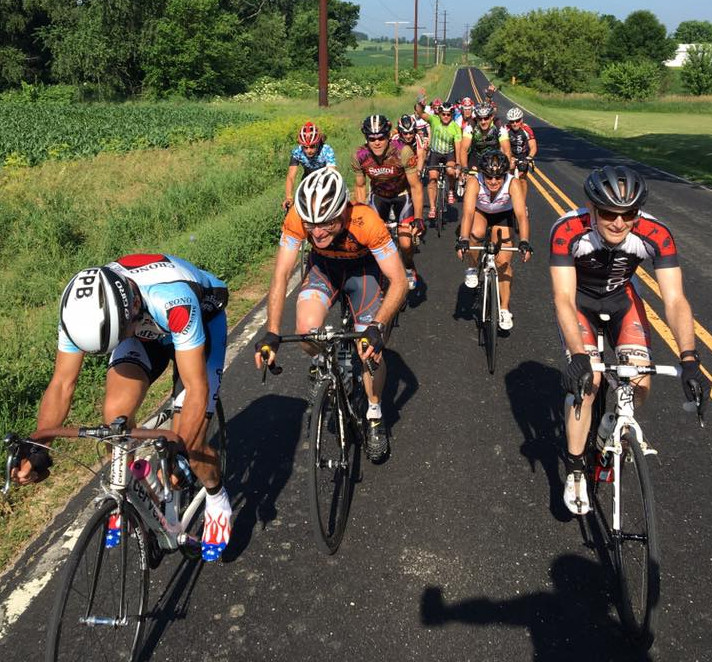
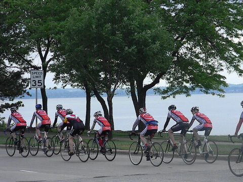
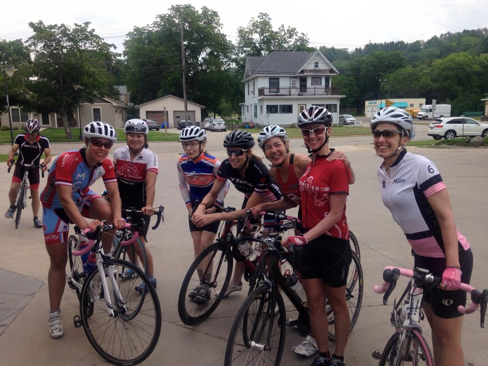

 |
 |
 |
The Wingra Heron Hops and Derailleur Society is a gentle-persons' club of cyclists. We proudly sponsor regular weekday rides starting early and returning by 7 AM. On Tuesday and Thursday we ride from the buffalo and WEOTA respectively (directions below). On Monday, Friday and Saturday other rides may be posted on the yahoo email list. This year we are planning regular Monday rides leaving from EEOTA at 6 AM and Friday rides leaving from the Buffalo at 5:30 AM. All rides leave promptly at the posted time. With GPS synchronized watches, rides have been departing at 5:30:30 sharp. On Wednesdays rides for mountain bikers might get posted from time to time.
Our rides average between 16 and 19 MPH. The best way to start with the group is on a Monday or a Friday ride. These rides are flat and easier than the Tuesday and Thursday rides. Tuesday is our hilly ride and typically features vigorous moments. Try the Thursday ride before the Tuesday ride if you have any doubts. Our group consists of good non-racers, retired racers and a few bike racers. Some of us learned the ropes and developed the skills to ride in a group by doing these rides. We enjoy the opportunity to pay back the favor by bringing interested riders into the fold.
Here is a video of our ride. This video is taken from two different rides and is a fair representation.
Indoor Zwift routes and information (5:50 AM CST)
Our Zwift rides are by invite only so be sure to add whhds to your Zwift name and follow the Zwift user with "whhds.org" in their name. Use the Zwift Companion App to find this user or users. We ride a steady pace with a few efforts along the way. The main goal is to ride as a group. However, Zwift will not allow anyone who pedals to get dropped so you can go as hard or easy as you like. If you stop pedaling, say something on Discord and we *might* wait for you. We try to pick routes that are suitable for group riding which might also earn a badge for participants.
One Hour Joy Ride (6
AM)
Departing a bit later than the other rides, this
ride leaves from the EEOTA (see below). It heads
out on the Cannonball Trail and takes Seminole to Grandview. It
heads back in on the Military Ridge Trail for a mix of road and
path riding. The agenda may vary, allowing for an easy steady
group ride as well as some paceline practice on the roads. This
route was added in 2018.
Alternate Buffalo Ride (5:30 AM)
This route
begins and ends at the buffalo and includes a frisky ride over a few
hills on the western edge of Madison. It avoids road construction
currently underway and benefits from some new smooth pavement. This
ride typically takes place on Tuesday mornings at 5:30 AM, replacing
the traditional route for 2018 and 2019.
Extended Paoli (5:30 AM)
See the Thursday route under the Traditional Routes heading below.
Runs on Thursday mornings at 5:30 AM.
Pathology Ride (5:30 AM)
This route begins
and ends at the buffalo for a gentle tour of area bike paths and
infrastructure. Makes for great recovery and is a great way to keep
the legs loose for the coming weekend of rides, events and races.
This ride typically takes place on Friday mornings at 5:30 AM. Not
that victory is certain but at least one person has been known to win
their race the day following this ride -- just saying.
The Tuesday Route
Departing from the buffalo on Tuesdays we ride a loop passing through
Riley. This ride has some hills and is often vigorous. We ride as
a group with a few accelerations immediately followed by a pause to
regroup.
The Wednesday Dirt Ride
Departing from the buffalo, we ride dirt at Quarry Ridge. This ride is
very much dependent on weather, trail conditions at Quarry Ridge and
the willingness of someone to post the ride on the Yahoo Group List.
Please consult the usual sources
especially, madcitydirt.com
before posting a ride.
Meet at the buffalo at 5:30 AM or at the top of the hill at 5:50 AM.
In April, be sure to bring bright lights. Since riding dirt on your
own is always joyous, have no worries if we fail to show and be happy
that the idea of riding with others got you out to ride some awesome dirt
while others slumbered. Please also watch the list, there might be an
alternative road or trail ride posted. If unhappy with the
pickings, post a ride!
The Thursday Route
Departing from WEOTA, the Extended Paoli (EP) route heads to Paoli
returning via Story Town road. Except for an acceleration or two on
the few climbs, this ride is steady and creates an opportunity to
practice riding in a group.
All rides are no-drop and return to Madison by 7 AM so we might make it to work on time. The Tuesday ride starts and ends at the buffalo. The Thursday ride departs from WEOTA.
Subscribe to the yahoo group to find out which ride we are doing on any given day. All rides are "weather permitting" which means attendance is excused when the roads are wet or it's just too cold.

Below is a link to the original WHHDS website created by Damon Bourne and hosted by the Bicycle Community Page (unedited).
Updated $Date: 2019/11/16 14:33:21 $